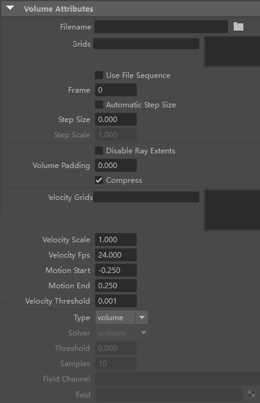
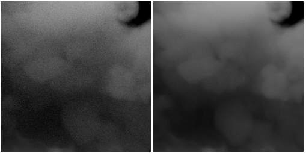
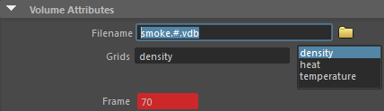
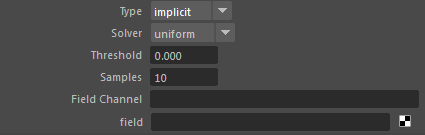
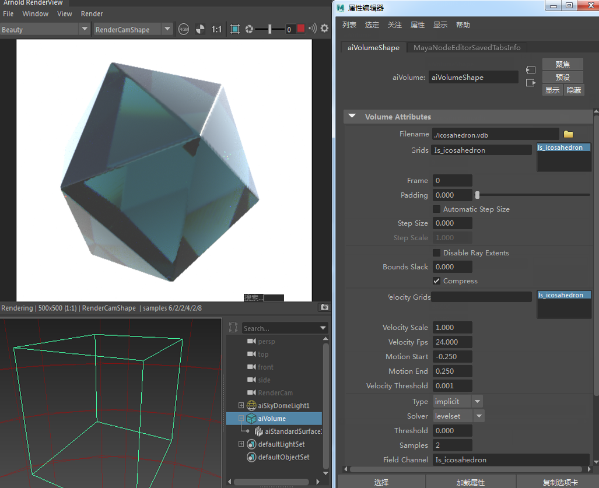
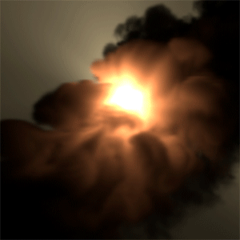
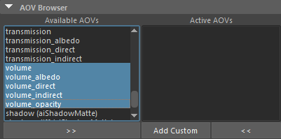
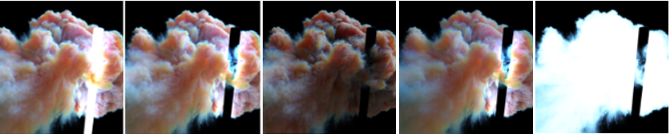

| 延伸阅读 |
|---|
| 有关 Arnold 体积的完整文档，请参见《Arnold 用户手册》中的体积。 |

体积文件格式（例如 OpenVDB）允许存储更大的数据集，同时针对体积数据的随机访问进行优化，从而提高渲染效率。OpenVDB 是一个开源 C++ 库，其中包含新颖的分层数据结构和一整套工具，可用于高效存储和操纵在三维栅格上离散化的稀疏体积数据。
有关使用 Maya 体积流体的信息，请单击此处。有关如何从 Houdini 将体积写入 OpenVDB 的教程，请单击此处。仅当 volume_ray_depth 大于 0 时，体积才能从其他放射性体积接收间接照明。
要减少体积中的噪波量，您必须确保场景中的任何灯光具有足够的 volume_samples，或者您拥有足够的摄影机 (AA) 采样数。

体积采样数(Volume Samples)：1。体积采样数(Volume Samples)：3
体积目前不支持自定义 AOV。
VDB 文件的位置。
确保在更新文件时未运行 IPR，否则边界框不会以正确的大小显示在视口中。
要在体积着色上下文中读取并作为通道提供的 OpenVDB 栅格的列表。栅格名称的示例包括密度、燃料、热量、温度或速度。
读取 VDB 文件序列。
指定要渲染的序列的帧。

使用 VDB 序列时为“帧”(Frame)和“文件名”(Filename)中使用的哈希标记设置关键帧
将 VDB 中定义的最小体素大小设置为 step_size。
有关体积 step_size 的详细信息，请单击此处。
如果您需要进一步编辑通道的读取结果，例如，对其进行颜色校正，可以使用 volume_sample_RGB 和 volume_sample_float 着色器。

可以使用体积隐式节点加载 OpenVDB 文件，以分别用于渲染体积和隐式曲面。

隐式类型体积 .vdb 文件

左侧：地板平面几何体隐藏。右侧：地板平面几何体可见。流体渲染错误。

与体积关联的可用 AOV 列表。每个选项均会为该组件创建一个单独的 AOV 渲染过程。

beauty、albedo、volume_direct、volume_indirect、volume_opacity。